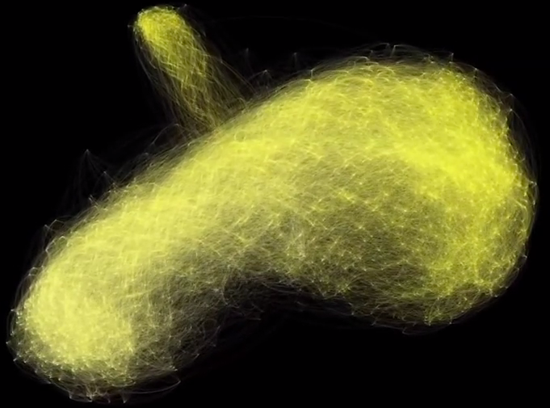

From the original site
This archived piece preserves its original text and historical context.
Humanities Networks Trailer
After building the primitive animation of the Arab Spring Wikipedia Edits, I wanted a way to script higher quality network animations. I used the Gephi Toolkit to script the filtering and screenshots, which were piped into ffmpeg to create these high-resolution movies.

What went right
The inspiration for this work was the response of viewers to that phase in force-directed network layouts when a network is first laid out or adjusts in response to a filter. It recorded that phase, and used the high-resolution Presentation Mode in Gephi to create beautiful animations.
What went wrong
Nothing went wrong with the process, but ultimately the results of the movies was no greater understanding of the networks, and instead they were just pretty.
The next version would have
A script.